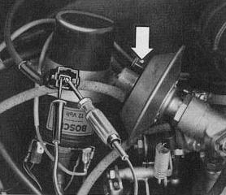

Contact in throttle valve switch does not operate
- Pull off connector on EGR valve
- Connect test light
- Operate throttle valve (Test light must light up at idle and full throttle position)

If test light lights up, replace EGR valve
If test light does not light up, check wire to throttle valve switch; if OK replace throttle valve switch.